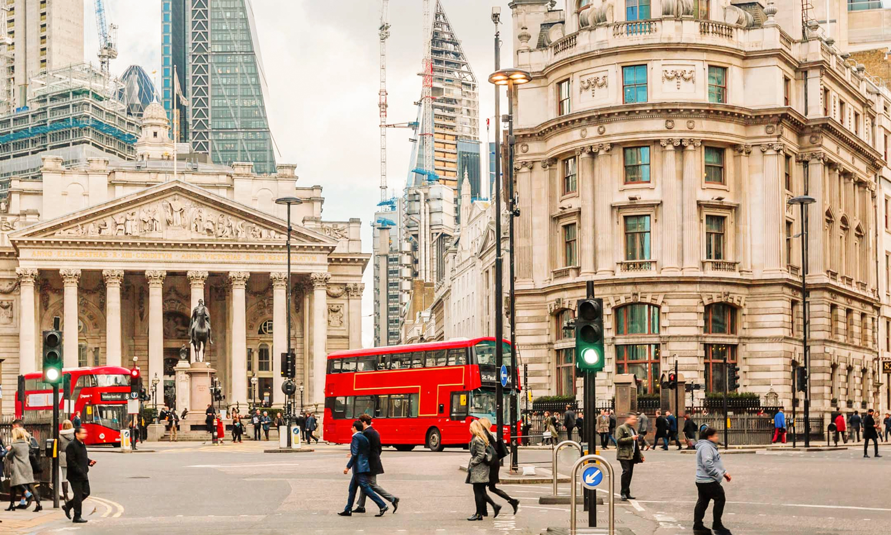

Лондон зустрів мене прохолодним повітрям і шумом багатолюдних вулиць. Це місто, де історія перегукується із сучасністю на кожному кроці. Гуляючи вздовж Темзи, я милувався величним Тауером, де зберігаються легендарні королівські коштовності, і знаменитим Тауерським мостом, що гордо здіймається над водою.
Біг-Бен вразив своєю монументальністю, а поруч із ним розкинувся Вестмінстерський палац, від якого віяло духом британської історії. У Букінгемському палаці я спостерігав зміну варти – справжнє видовище, яке підкреслює велич монархії.
А в Гайд-парку відчув спокій серед метушливого міста, спостерігаючи, як лондонці годують білок і неквапливо прогулюються алеями. Відвідавши Британський музей, я загубився у світі стародавніх артефактів, затримавшись біля знаменитого Розеттського каменя.
Увечері я насолоджувався панорамою міста з оглядового колеса London Eye, милуючись вогнями, що осяювали хмарочоси та старовинні будівлі. Лондон – це не лише історія, а й сучасний ритм: я відчув його, гуляючи жвавими вулицями Сохо, занурюючись у яскравий світ пабів, театрів і вуличних музикантів.
Лондон вразив своєю атмосферою, де старовина переплітається із сучасністю. Біг-Бен та Вестмінстерський палац нагадували про велич британської історії, а Темза несла свої води під Тауерським мостом. Я спостерігав зміну варти біля Букінгемського палацу, насолоджувався панорамою з London Eye та губився серед артефактів Британського музею. Жвавий ритм Сохо, ароматний чай із молоком і класична риба з картоплею стали чудовим завершенням дня. Лондон підкорив мене своїм унікальним поєднанням традицій і сучасності – місто, куди хочеться повернутися.
Ця поїздка залишила неймовірні враження. Лондон — це місто історій!